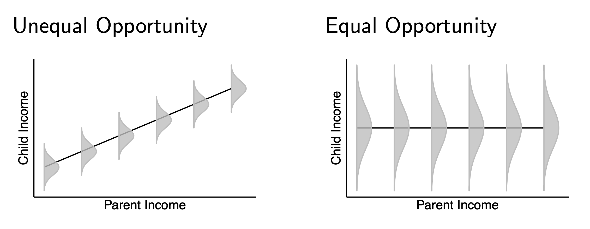
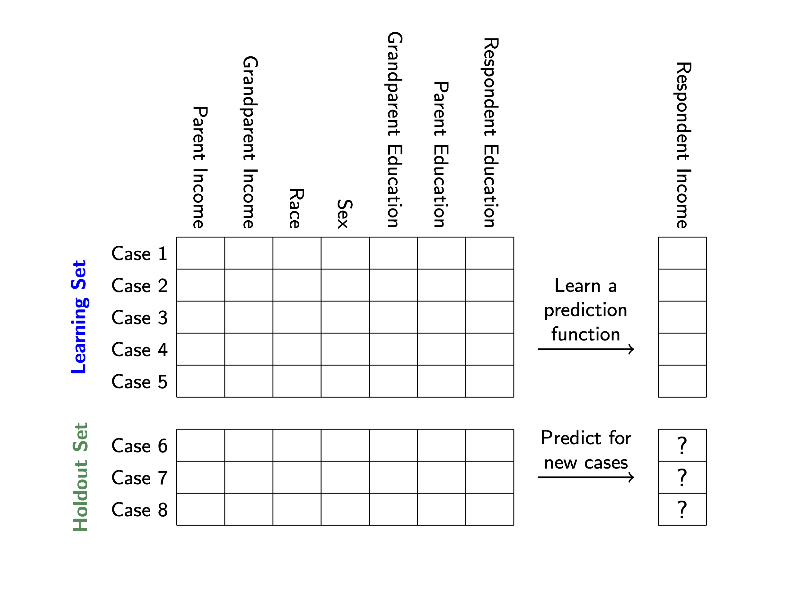

Economic opportunity
[Slides from 2/20] [Slides from 3/5]
Equality of economic opportunity is an ideal that is widely shared.
Now, the premise that we’re all created equal is the opening line in the American story. And while we don’t promise equal outcomes, we’ve strived to deliver equal opportunity: the idea that success doesn’t depend on being born into wealth or privilege, it depends on effort and merit.
— President Obama, Remarks on the Economy, December 2013
To study economic opportunity with the tools of data science, we will translate this abstract concept into statistical quantities.
Opportunity: Income mobility
In a world of equal opportunity, children from all families would have the same chances of realizing a high income as adults. In a dystopian world of unequal opportunity, a child’s future income might be perfectly determined by the income of their parents. The world as it exists is somewhere between these extremes.
 Research on income mobility in the United States shows that opportunity is unequal: about 10% of children born in the bottom fifth of the distribution make it to the top, whereas about 30% of those born in the top fifth of the distribution stay at the top.
Generalizing to many inputs
Parent income is not the only variable that determines a child’s life chances. For instance, one’s grandparents and other extended kin may also provide resources not captured by parent income. Other aspects of family background that may matter include race, education, family structure, and outcomes in previous generations. How can we measure opportunity as a function of many inputs?
One approach is to define economic opportunity as a prediction problem.

Cases are divided into the learning set and holdout set.
- the learning set is where we will learn functions to predict a child’s income given features in their family background
- the holdout set is where we will evaluate predictions, at the end of this exercise
The features are the columns. Most features correspond to family background. The data include one feature that occurs within the respondent’s life course: own education. We suggest that you
- first attempt the prediction task without own education, to see how well you can predict given family background
- then add own education and see how performance changes
Broadly speaking, predictive performance will tell us something about equality of opportunity.
- perfect prediction = perfect inequality of opportunity. Family background determines one’s outcome
- completely imperfect prediction = full equality of opportunity. Family background tells us nothing about one’s income
Reality will be somewhere in the middle!
Accessing data
Visit the exercise page on OpenICPSR. You will need to register for an account and agree to terms. Download for_students.zip.
About these data: The Panel Study of Income Dynamics (PSID) began in 1968 with a representative sample of U.S. households. Since then, the study has repeatedly interviewed these individuals and their descendants. The PSID is uniquely positioned to help us answer questions about income mobility over 3 generations: grandparents, parents, and respondents. We will refer to these as generations g1, g2, and g3.
Your task
Your task is to predict respondent’s incomes.
- to build your model, using
learning.csv - make predictions for the cases in
holdout_public.csv
You can use any statistical or machine learning approach you want. For ideas, see the page on statistical learning.
You can also use any or all of the predictors provided in learning.csv:
- respondent sex
- respondent education
- parent and grandparent education
- parent and grandparent log income
- grandparent’s race
For the purpose of this exercise, we have constructed each log income variable to be the log of mean income across all surveys conducted with the person at age 30–45.
The data also contain identifiers:
- g1_id identifies grandparents (multiple rows have the same grandparent)
- g2_id identifies parents (multiple rows have the same parent)
- g3_id identifies respondents (each row is a unique respondent)
How to submit
You will submit
- your predictions in a .csv file with two columns
g3_idfor each case inholdout_publicg3_log_incomewith your prediction for each case
- your .R code file
Submit predictions in this Google form